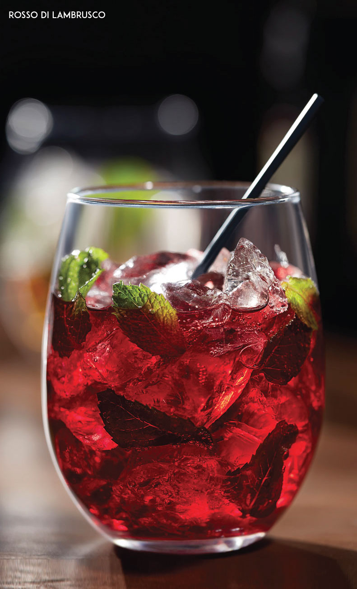
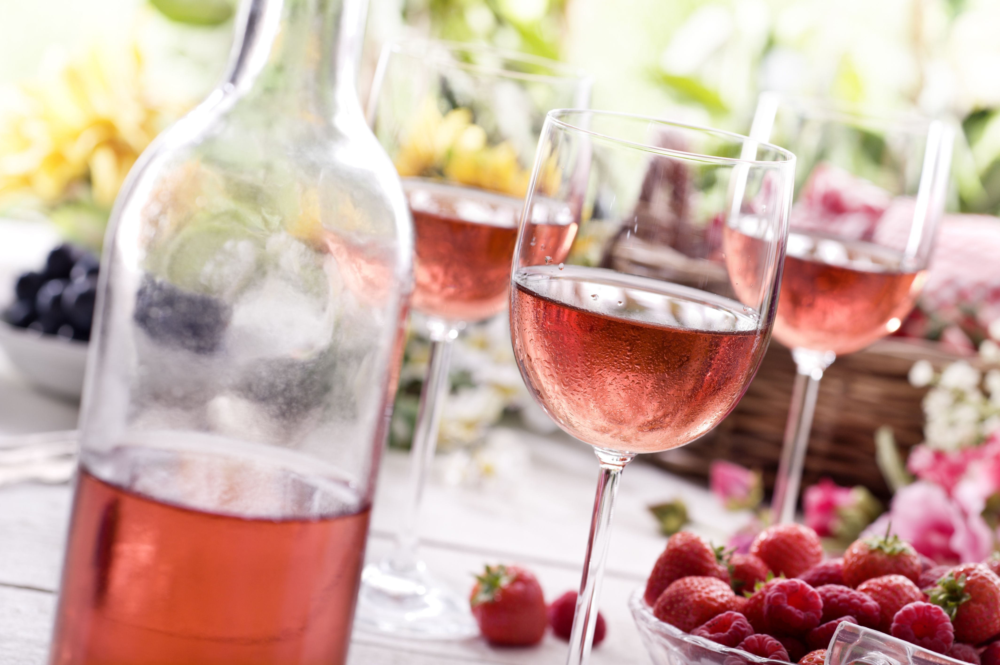
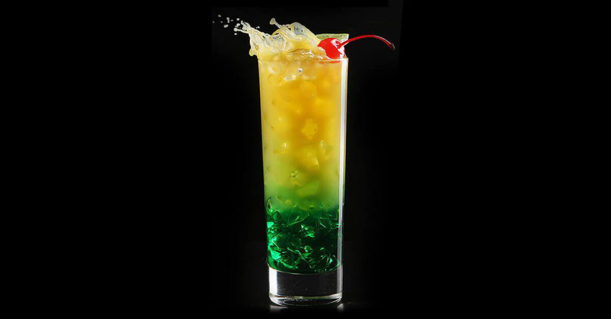
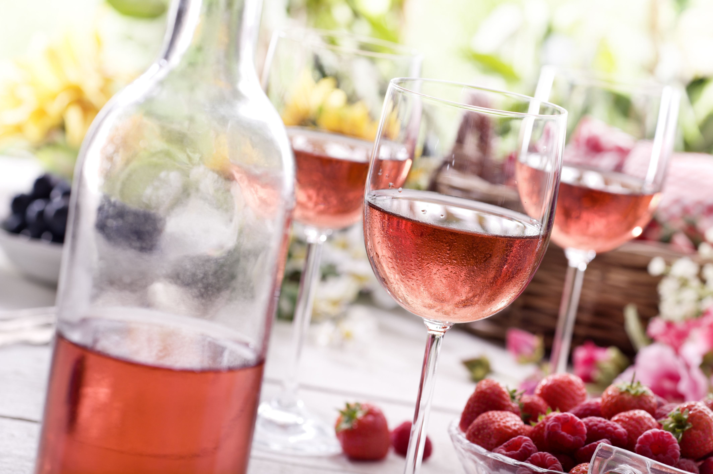
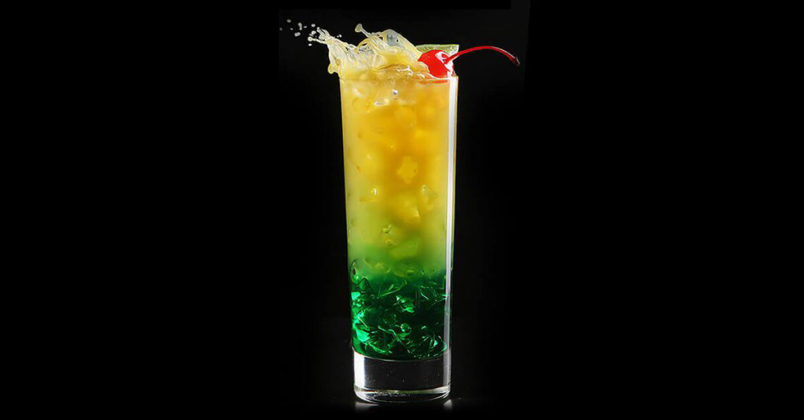

Restaurant Sempiterno
Bebidas con alcohol
ROSSO DI LAMBRUSCO
Coctel refrescante a base de vino lambrusco y té de frutos rojos con un toque de menta fresca.

PIÑA COLADA
La que ya conoces, pero más rica: ron con sabor piña-coco y un toque de naranja, servido en hielo picado.
 SANGRIA RED.
El vino como nunca lo habías probado: flotando sobre
jugo de naranja, refresco de limón y jarabe de cereza.
SANGRIA RED.
El vino como nunca lo habías probado: flotando sobre
jugo de naranja, refresco de limón y jarabe de cereza.
 TUTTA FRUTTA
Imagínate la combinación de los mejores vinos italianos y de las frutas más ricas y frescas. ¡Ahora disfrútala!
VASO (206 mL)
1/2 JARRA (750 mL)
JARRA (1.25 L).
TUTTA TINTO
•Jarabe natural
• Agua mineral
• Manzana
• Uvas
TUTTA FRUTTA
Imagínate la combinación de los mejores vinos italianos y de las frutas más ricas y frescas. ¡Ahora disfrútala!
VASO (206 mL)
1/2 JARRA (750 mL)
JARRA (1.25 L).
TUTTA TINTO
•Jarabe natural
• Agua mineral
• Manzana
• Uvas
 TUTTA ROSATA
• Jarabe natural • Agua mineral • Frambuesa • Durazno

LUCES DE LA HABANA.
Una combinación deslumbrante: ron de coco y licor de melón con jugo de naranja y piña.

TUTTA ROSATA
• Jarabe natural • Agua mineral • Frambuesa • Durazno

LUCES DE LA HABANA.
Una combinación deslumbrante: ron de coco y licor de melón con jugo de naranja y piña.
